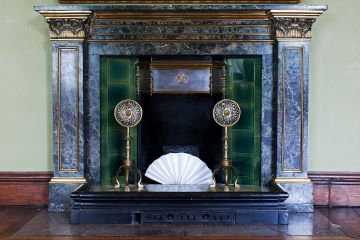

The fireplaces are recorded as fixtures of the building but two of them can also be considered as part of the sculpture collection. The fireplace in the Red drawing room was purchased from Richard Hayward(1728-1800) by Charles Townley (1737-1805) in 1780. The fireplace in the Green drawing room is made from Mona marble, quarried in Anglesey. It was created by George Bullock (1783-1818) and purchased for Towneley at the sale of his stock in trade in 1819.
Chimneypiece by Richard Hayward
Chimneypiece of Mona Marble by George Bullock